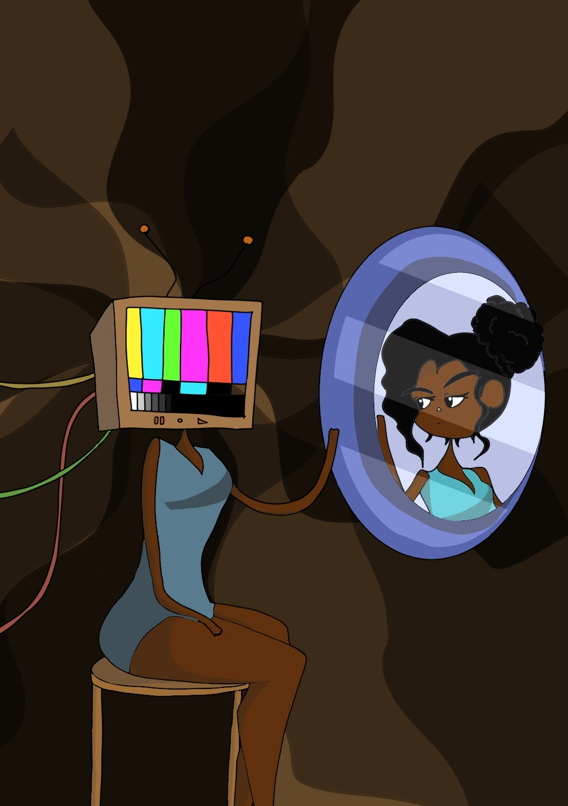
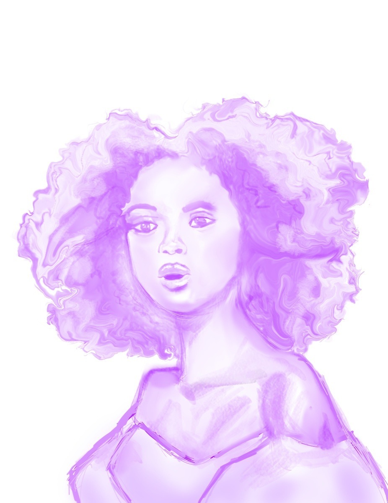
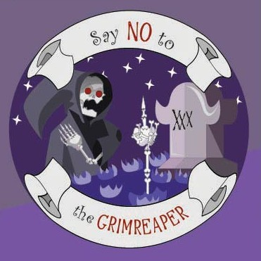

2D Works
A collection of selected two-dimensional works, illustrations, and visual experiments.
Artwork One

Made in Clip Studio Paint and Adobe Photoshop, this artwork captures how we deprived ourselves of technology and this can be highlighted from a person staring through a reflection of who they use to be.
Artwork Two

Made in Adobe Photoshop, this image of a woman made from the brush tool is a study I did to improve drawing anatomy.
Artwork Three

Made in Adobe Illustrator, this artwork made from the pen tool is presented as a sticker complimenting how we should let the grim reaper come after us.